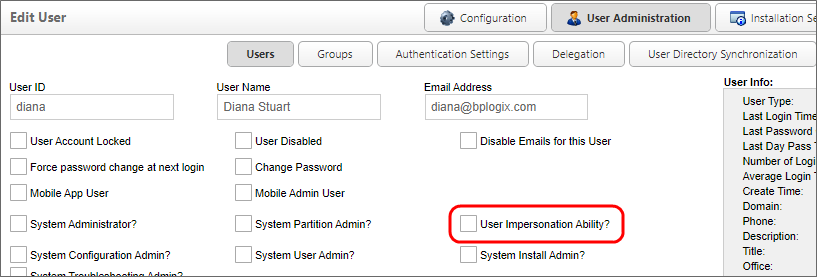
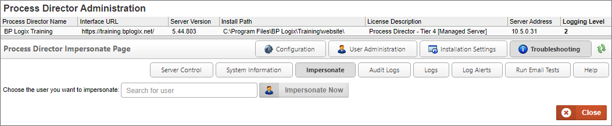

For Process Director v5.13 and higher, a user can't impersonate anyone who has System Administrator permissions, unless the user also has System Administrator permissions.
For Process Director v5.13 and higher, a user can't impersonate anyone who has System Administrator permissions, unless the user also has System Administrator permissions.For Cloud installations, or on-premise installations that use the Compliance Edition or Subscription licenses, Process Director allows some users to impersonate other users. Impersonation allows a user to act as another user, seeing and completing the tasks to which he is assigned, leaving his name on routing slips when doing so, etc. Impersonating a user is almost exactly the same as being logged in as that user, except that the impersonation will appear in the audit log. This feature is useful to assist users with problems they are having, or to debug problems you can't replicate with another user.
To grant a user the ability to impersonate other users, navigate to the User Administration section of the IT Admin area, access the Users page, and click on the user whom you'd like to grant the ability. When the user's profile opens, you'll see a checkbox that says User Impersonation Ability?. Check the box.

To impersonate another user, go to the Impersonate page of the Troubleshooting section. There you'll see a Choose the user you want to impersonate user picker. Select the user whom you'd like to impersonate this user, and click the Impersonate User button.

When impersonating another user, you'll use your own credentials to complete tasks that require reauthentication, so you do not need to know the impersonated user's password to complete tasks.
For Process Director v5.13 and higher, a user can't impersonate anyone who has System Administrator permissions, unless the user also has System Administrator permissions.